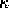
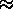
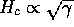
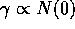
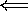
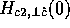

Several objections may be raised to the type I superconductivity hypothesis; firstly, the value of Hc obtained from the t = 0.57 Hc2(theta) fit in Fig. 4 (43 gauss) is considerably lower than that predicted from the specific heat (75 gauss). The ratio between the value of Hc calculated from the specific heat measurements and the Hc obtained from the Hc2(theta) fits is about 1.8 for two Tc = 1.5 K specimens and the three temperatures where Hc2(theta) measurements were performed. A second problem with the type I explanation is that the Hc2(theta) data are not perfectly flat near theta = 0°, although Hc should be absolutely constant as a function of angle. Both of these discrepancies may be caused by angle-dependent demagnetization effects, which are hard to account for quantitatively.[17]
In order to extract believable values for Hc from the Hc2(theta) fits, demagnetization corrections need to be applied. The angular dependence of the demagnetization factor of an oblate spheroidal superconductor has been worked out by Denhoff and Gygax.[17] However, the application of this formula to the C4KHg data is not justified since too many parameters which are poorly known (dimensions of the intercalated sample) or not independently known ( and epsilon) are involved. Therefore the demagnetization for the C4KHg samples has been estimated only for the high-symmetry directions by approximating the sample shape as ellipsoidal.
The samples used in the Hc2(theta) measurements were flat plates with typical dimensions on the order of (2 mm × 2 mm × 0.5mm). Consultation of standard tables[43] shows that a demagnetization correction of about 3 is anticipated for an ellipsoid with radii in the ratios 1:1:0.25 when the field is applied along the perpendicular to the smallest dimension. If this correction is applied to the Hc values determined from the Hc2(theta) fits, one obtains Hc(0)  203 gauss, which is now a factor of 1.8 higher than the Hc(0) of 112 gauss calculated from the specific heat data. Since  and , a higher Hc for the pink Tc = 1.5 K specimens implies that they have a higher density of states N(0) than the gold specimens, which is in keeping with their higher Tc.
Now that an estimate for the true value of Hc has been obtained, it is interesting to re-examine Fig. 4.  marks the corrected value of the thermodynamic critical field at t = 0.57. The implication of this Hc estimate is that C4KHg is type I in the approximate range theta < 80 °, and type II for theta > 80 °. Magnetization measurements on C4KHg are desirable to positively identify type I superconductivity. Specific heat measurements on Tc = 1.5 K pink C4KHg specimens would also be useful.
The extended linearity of Hc2(T) reported here for Tc = 1.5 K pink C4KHg specimens is not surprising in light of previous studies of layered superconductors. Positive curvature or extended linearity of Hc2(T) are phenomena common to almost all anisotropic superconducting compounds.[59] Depending on the specific type of superconductor in question, many different explanations might be considered for the anomalous temperature dependence of Hc2. For example, mechanisms ranging from coupling-dimensionality crossover[35] to proximity-effect-induced curvature[7] to magnetoresistive anomalies[16] have been cited as the cause of positive curvature in various superconductors. However, each of these esplanations for its own reasons seems to be inappropriate for GIC's.[10] In order to choose an appropriate model from the many that are available, the best procedure is to consider what is already known about GIC's.
There are two types of models of anisotropic superconductivity that seem to contain the right features for the GIC superconductors: these are the anisotropic Fermi surface models[8,61] and the multiband superconductivity models.[22,2] Anisotropic Fermi surface models are an obvious choice because the quasi-2D band structure of graphite is responsible for many of the characteristic properties of GIC's. The simplest anisotropy-based model available is that developed by Butler[8] to fit Hc2(T) in Nb. This model was adapted by Dalrymple and Prober to fit the critical fields of NbSe2, which show extended linearity and positive curvature[13] similar to that seen in GIC's. The NbSe2 Fermi surface has cylindrical pieces at the hexagonal Brillouin zone boundary, and bears a great deal of resemblance to the proposed Fermi surface of many of the GIC's.[28,18] The band structure of C4KHg has been calculated,[27] but unfortunately not enough quantitative information about the Fermi surface has been reported to allow a detailed comparison between the Butler model and the data for C4KHg.
Another well-established feature of the GIC's Fermi surface is the presence of multiple bands. Some of the bands at the Fermi surface of graphitic origin are nearly two-dimensional in character. Other bands, which may be either of intercalant or graphitic origin, are more 3D in character. In C4KHg these 3D bands are derived from hybridized K and Hg levels.[27] Models for Hc2(T) which incorporate the participation of two bands in the superconductivity therefore appear to be a logical choice for GIC's. Entel and Peter have fit Hc2(T) data for Cs0.1WO2.9F0.1, a tungsten fluoroxide bronze, using a two-band Fermi surface model.[22] Al-Jishi[3] has proposed a similar model specifically tailored to fit critical field data on C8K, although calculations using this model are still preliminary. More theoretical work is needed to interpret the large body of critical field data already available.[30,9]
The idea that both graphitic and intercalant bands participate in GIC superconductivity is sensible for two reasons. One reason is that there are superconducting GIC's (specifically the binary compounds C8K (Ref. [37]) and C8Rb (Ref. [36])) which are synthesized from non-superconducting starting materials. Since the KHg-GIC's are synthesized from KHg amalgams which are themselves superconducting, it might be thought that this argument for multiband superconductivity is invalid for them. However, the increase of Tc with stage in the KHg-GIC's is contrary to expectations of the superconducting proximity effect[57,14] if the carbon layers are not also participating in the superconductivity. The large critical field anisotropy seen in GIC's is also difficult to explain if graphitic electrons are not involved.[49,2] If the graphitic electrons are implicated in GIC superconductivity, then it follows that speculation about a coupling-dimensionality crossover in KHg-GIC's[30] due to decoupling of the intercalant layers is not sensible. If the graphitic bounding layers are also superconducting, then it may be their separation which will determine a coupling-dimensionality change. Considerations of this type may be important in discussion of dimensionality change in the high-Tc ceramic superconductors.
It is reasonable to expect a common origin for the extended
linearity of Hc2(T) and the deviations from Eq. 1
in the Hc2(theta) fits. However, the
deviations in Hc2(T) from the HW theory occur at
the lowest obtainable reduced temperatures. The
Hc2(theta) fits to Eq. 1, on the other
hand, worsen as the temperature is increased toward
Tc.[10]
Worsening agreement between Eq. 1 and the data as temperature
is increased is expected if type I superconductivity is the
origin of the discrepancy. This behavior has already been
observed for TaN.[56] All
the available evidence therefore points to type I
superconductivity as the explanation of the poor quality of
the fits shown in Fig.  .
.
It was not necessary to make allowance for type I character
to fit the Hc2(theta) curves of the gold,
mixed-phase samples, a finding which is consistent with the
observations of Iye and Tanuma.[30] Type II character for all
orientations of low-Tc C4KHg is due to
the fact that the Tc = 0.8 K samples have critical
fields almost as high as the Tc = 1.5 K samples.
To be more specific, the typical value of  for a
Tc = 1.5 K C4KHg specimen is only about
750 gauss, while that for the Tc = 0.8 K specimens
is about 650 gauss.[30] The
critical field slope at Tc in the HW model is
dHc2/ dT , = , 4 kB / pi e D,
where kB and e are the usual fundamental constants
and D = vF l/3 is the diffusivity.[42,47] Therefore the higher
dHc2/dT in the mixed-phase samples suggests that
they have either a lower mean-free path l or a
smaller Fermi velocity vF. The greater in-plane
disorder of the mixed-phase samples would appear to favor the
lower mean-free path explanation.